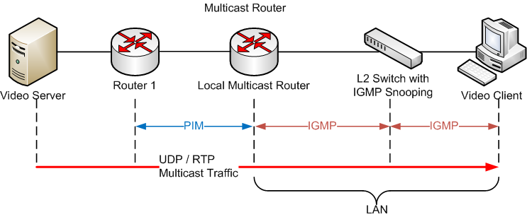
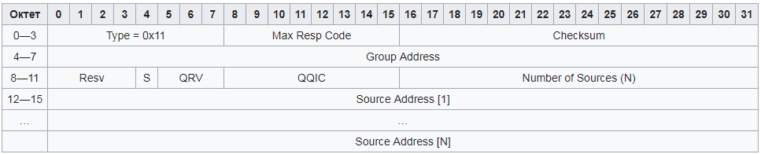
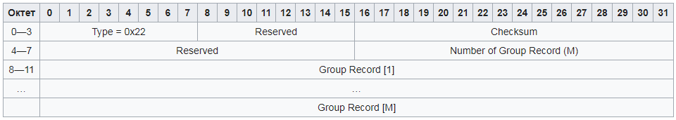
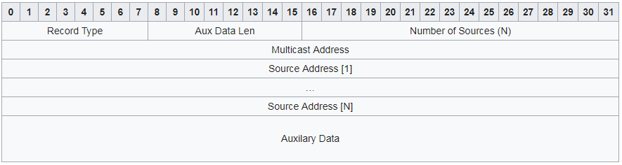
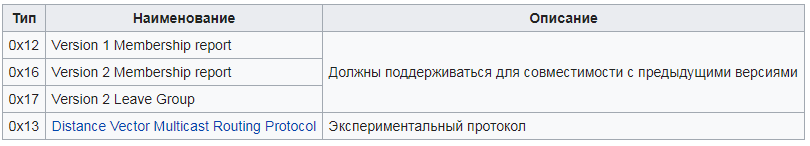

IGMP
IGMP (Internet Group Management Protocol — протокол управления группами Интернета) — протокол управления групповой (multicast) передачей данных в сетях, основанных на протоколе IP. IGMP используется маршрутизаторами и IP-узлами для организации сетевых устройств в группы.
Этот протокол является частью спецификации групповой передачи пакетов в IP-сетях. IGMP расположен на сетевом уровне. Он во многом аналогичен ICMP для одноадресной передачи. IGMP может использоваться для поддержки потокового видео и онлайн-игр, для этих типов приложений он позволяет использовать сетевые ресурсы более эффективно. IGMP уязвим к некоторым атакам, и брандмауэры обычно позволяют пользователю отключить этот протокол, если в нем нет необходимости.
IGMP используется только в сетях IPv4, так как в IPv6 групповая передача пакетов реализована через протокол Multicast Listener Discovery.
Архитектура
Сеть, предоставляющая услуги групповой передачи данных (например видео) с использованием IGMP, может иметь следующую базовую архитектуру:

IGMP используется клиентским компьютером и соседними коммутаторами для соединения клиента и локального маршрутизатора, осуществляющего групповую передачу. Далее между локальным и удаленным маршрутизаторами используется протокол Protocol Independent Multicast (PIM), с его помощью групповой трафик направляется от видеосервера к многочисленным клиентам групповой передачи.
Стандарты
Согласно Request for Comments (RFC), документу сообщества Internet Engineering Task Force (IETF), существует три версии IGMP. IGMPv1 определен в RFC 1112, IGMPv2 — в RFC 2236 и IGMPv3 — в RFC 3376.
Основным улучшением в IGMPv3 относительно IGMPv2 является поддержка фильтрации IP-адресов. С помощью этого механизма узел может сообщить, с каких адресов он хочет получать пакеты, а с каких нет.
Реализация
Протокол IGMP реализован в виде серверной и клиентской частей, первая из которых выполняется на маршрутизаторе, вторая — в узле сети, получающем групповой трафик. Клиент посылает уведомление о принадлежности к какой-либо группе локальному маршрутизатору, в это время маршрутизатор находится в ожидании уведомлений и периодически рассылает клиентам запросы.
- Операционные системы семейств BSD, Linux и Windows поддерживают клиентскую часть протокола. В системе Linux IGMPv3 был добавлен в версии ядра 2.5. Для FreeBSD IGMPv3 был добавлен в версии 8.0.
Для реализации серверной части IGMP в Linux используются демоны, например, mrouted может действовать как IGMP маршрутизатор. Существуют также целые программные комплексы (такие, как XORP), позволяющие превратить обычный компьютер в полнофункциональный маршрутизатор групповой передачи.
В OpenBSD поддержка IGMP в ядре изначально включает в себя базовую поддержку маршрутизации, а имеющиеся в составе ОС демоны mrouted и dvmrpd позволяют решать более сложные задачи (например, туннелирование multicast-трафика).
Структура пакетов IGMPv3
Определена стандартом RFC 3376.
Запрос принадлежности (Membership Query Message)
Запросы принадлежности рассылаются маршрутизаторами для того, чтобы для каждого узла определить его принадлежность к каким-либо группам (group membership state) и список источников информации, от которых данный узел хочет получать сообщения (reception state). Существует три типа таких запросов:
- Общие запросы (General Queries) — позволяют получить полную информацию для каждого из узлов. Маршрутизатор периодически рассылает эти запросы всем системам, подключенным к его сети.
- Запросы с указанием группы (Group-Specific Queries) — используются для определения состояния подписки для заданной группы узлов. Такие запросы рассылаются по соответствующему групповому адресу.
- Запросы с указанием группы и источника (Group-and-Source-Specific Queries) — позволяет для каждого узла заданной группы определить, какие сообщения из всех, посылаемых заданными источниками, этот узел хочет получать.

- Код макс. ответа (Max Resp Code) — максимальное время (в 1/10 секунды) ожидания ответа, соответствующего данному запросу. Если значением является число, меньшее 128, оно используется напрямую. Если же значение больше или равно 128, оно интерпретируется как экспонента с мантиссой.
- Контрольная сумма (Checksum) — 16-битная контрольная сумма для всего IGMP-сообщения.
- Групповой адрес (Group Address) — групповой адрес, используемый в запросах с указанием группы. При общем запросе это поле устанавливается равным нулю.
- Resv — поле зарезервировано, его следует обнулять при посылке и игнорировать при получении.
- Флаг S (Прекратить серверную обработку, Suppress Router-side Processing) — установка этого флага указывает всем маршрутизаторам, получившим данное сообщение, прекратить обновления по таймеру.
- QRV (Переменная надежности запрашивающего, Querier’s Robustness Variable) — содержит переменную надежности (Robustness Variable), значение которой используется посылающим устройством. Маршрутизаторы должны обновлять их переменные надежности в соответствии с последним полученным запросом, пока это поле ненулевое.
- QQIC (Код интервала запроса, Querier’s Query Interval Code) — значение поля указывает интервал между запросами (Query Interval), используемый запрашивающим. Если значением является число, меньшее 128, оно используется напрямую. Если же значение больше или равно 128, оно интерпретируется как экспонента с мантиссой.
- Количество источников (Number of Sources, N) — определяет число адресов источников, присутствующих в этом запросе. Для общих запросов и запросов с указанием группы это значение равно нулю. Для запросов с указанием группы и источника это поле ненулевое, оно ограничено значением MTU сети.
- Адрес источника [i] (Source Address) — массив индивидуальных (не групповых) IP-адресов источников данных.
Отчёт о принадлежности (Membership Report Message)

- Reserved — должно устанавливаться в ноль при передаче и игнорироваться при приёме;
- Number of Group Record — количество полей Group Record в сообщении;
- Group Record — блок полей, содержащий информацию о членстве отправителя в группе:

- Record Type — тип записи:
- Текущее состояние — посылается в ответ на запрос, сообщает о текущем режиме фильтрации, относительно указанного группового адреса, принимает значения MODE_IS_INCLUDE и MODE_IS_EXCLUDE;
- Изменение режима — посылается при изменении режима фильтрации, принимает значения CHANGE_TO_INCLUDE_MODE и CHANGE_TO_EXCLUDE_MODE;
- Изменение списка источников — посылается при изменении списка источников без изменения режима фильтрации:
- ALLOW_NEW_SOURCES — в режиме INCLUDE адреса добавляются к списку, в режиме EXCLUDE — удаляются из списка;
- BLOCK_OLD_ SOURCES — в режиме EXCLUDE адреса добавляются к списку, в режиме INCLUDE — удаляются из списка.
- Aux Data Len — длина дополнительных данных в 32-битных словах.
- Number of Sources — количество адресов источников данных;
- Multicast Address — групповой адрес, к которому относится информация в записи;
- Source Address — массив индивидуальных IP-адресов источников данных;
- Auxilary Data — дополнительная информация, не должна использоваться в текущей версии протокола.
Другие типы пакетов
